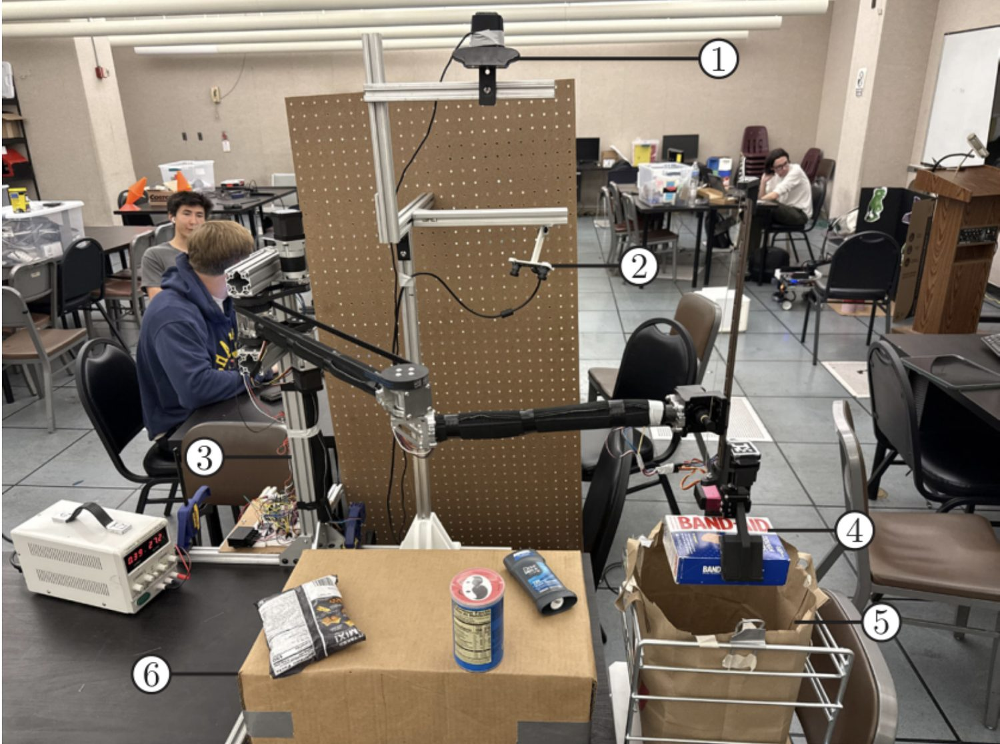

Grocery Packing

Context
This was a two-quarter senior capstone project, built by a team of five. The starting point was deliberately open-ended: we were given full autonomy to define our own project, with no assigned problem, no reference design, and no constraints on what to build. Out of everything we could have chosen, we decided to take on automated grocery packing, the labor-intensive and easy-to-get-wrong task of bagging groceries at checkout.
We took it from a single idea to a working machine. Over two quarters we designed the system, sourced the parts, machined and 3D-printed the custom components, assembled the arm from nothing, and built the full perception and control software from scratch. The result is a self-contained robot that looks at a group of grocery items, decides what to pick and where to put it, grasps each one, and packs it into a bag, repeating the cycle autonomously until the order is done.
Part 1: What the System Does
The robot runs a complete loop from seeing an item to placing it in the bag, and it re-plans after every single pick rather than following a fixed script.
It sees the items. Two cameras, a stereo camera and an overhead webcam, feed a custom-trained vision model that identifies each grocery item and separates it from the background. Combined with stereo depth data, this gives the system a 3D estimate of every object: where it is, how tall it is, and how big its footprint is, so the arm knows exactly where and how to reach.
It decides and grabs. Once an item is identified, the software calculates the exact joint movements needed to reach it and chooses the best spot for it in the bag using a packing algorithm that keeps items from colliding or toppling. A custom two-finger gripper, lined with foam and silicone for grip, closes on the item and lifts it.
It moves the item. A 4-degree-of-freedom SCARA-style arm, built from lightweight carbon fiber and machined aluminum, carries the gripper across the workspace: two rotating joints handle position, a vertical joint sets height, and a wrist joint sets orientation.
It checks its own work. After each grab, the system confirms the item actually left the table before moving on. If a grab fails, it automatically retries, so one missed pick never derails the rest of the run.
Across 64 autonomous test runs handling 454 grocery items, the robot completed 404 of 425 pick-and-place attempts, a 95.1% success rate.
Part 2: My Role
My focus was manufacturing, and my work ran from design through fabrication, assembly, and testing. I turned the arm from a CAD model into a physical machine that actually held together and moved.
I contributed to the mechanical design, shaping how parts would be built and fastened so they were actually manufacturable rather than just drawable. From there I fabricated the custom components the arm is made of, machining the aluminum parts and 3D-printing the rest, then assembled the arm and end effector from the ground up: bearings, belts, motors, and custom parts integrated into one working structure.
I also helped validate the system as it came together, on both the mechanical and electronic sides, testing the joints and belt transmissions for rigidity and the motors, drivers, and control circuitry for correct motion. The goal throughout was a build that was rigid, reliable, and ready to carry the software the rest of the team layered on top.